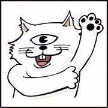
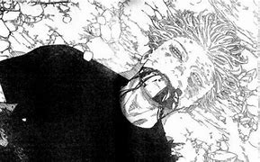
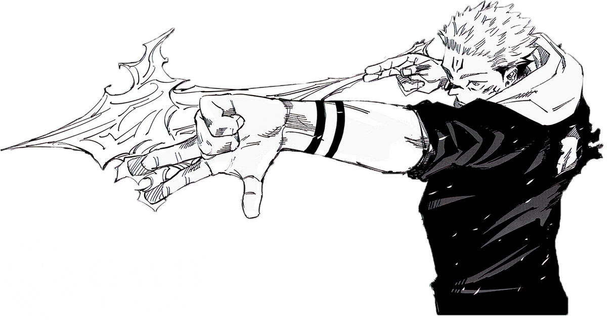
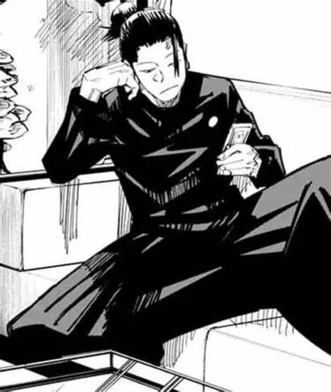
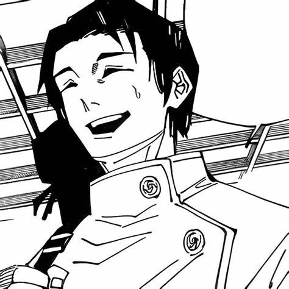

Yuji Itadori is an expert at track and field. But he has zero interest running around in circles, he's happy as a clam in the Occult Research Club. Although he's only in the club for kicks, things get serious when a real spirit shows up at school!
When his grandfather is on his deathbed, Yuji makes a promise to him; that he will do kind deeds so that he dies surrounded by loved ones, unlike his grandfather.
However, Yuji's life takes a sudden turn as he meets Megumi Fushiguro; a jujutsu sorcerer who tries to retrieve a cursed object. When Yuji's friends open the cursed object that they found, things go south as the cursed spirits that it spawned start roaming in school. As Fushiguro and Yuji are almost defeated by one of the spirits, Yuji then swallows the cursed object and gains its power. As a result, Yuji becomes cursed by the object and gets dragged into Fushiguro's thrilling world of jujutsu sorcerers and cursed spirits.
Author
Gege Akutami (芥あくた見み下げ々げ Akutami Gege?) is a Japanese manga artist and the author of Jujutsu Kaisen.

Characters
Gojo
Satoru Gojo (五ご条じょう悟さとる Gojō Satoru?) is one of the main protagonists of the Jujutsu Kaisen series. He is a special grade jujutsu sorcerer and widely recognized as the strongest in the world. Satoru is the pride of the Gojo Clan, the first person to inherit both the Limitless and the Six Eyes in four hundred years. He works as a teacher at the Tokyo Jujutsu High and uses his influence to protect and train strong young allies.

Sukuna
Ryomen Sukuna (両りょう面めん宿すく儺な Ryōmen Sukuna?), more often referred to as simply Sukuna (宿すく儺な Sukuna?), is the strongest jujutsu sorcerer from over a thousand years ago. Regarded as the undisputed King of Curses (呪のろいの王おう Noroi no Ō?), Sukuna is one of the primary antagonists of the Jujutsu Kaisen series.

Geto
Suguru Geto (夏げ油とう傑すぐる Getō Suguru?) is an antagonist in both the Jujutsu Kaisen series and its prequel Jujutsu Kaisen 0: Jujutsu High. He was originally a student of Masamichi Yaga's alongside Satoru Gojo and Shoko Ieiri at Tokyo Jujutsu High. His experiences as a jujutsu sorcerer bred a deep hatred for non-sorcerers, leading to an incident where Suguru massacred over a hundred civilians in a single night. He was expelled from Jujutsu High and came to be known as the worst of all curse users.

Yuta Okkotsu
Yuta Okkotsu (乙おっ骨こつ憂ゆう太た Okkotsu Yūta?) is a major supporting character in the Jujutsu Kaisen series and the main protagonist of its prequel series, Jujutsu Kaisen 0: Jujutsu High. He was initially a special grade cursed human haunted by his late childhood friend, Rika Orimoto. Satoru Gojo mentored Yuta and enrolled him at Tokyo Jujutsu High.
Yuta is currently a second-year student at Jujutsu High where he works as a jujutsu sorcerer. He was training overseas in Africa with Miguel until after the Shibuya Incident when he returned to Tokyo.

Nobara
Nobara Kugisaki (釘くぎ崎さき野の薔ば薇ら Kugisaki Nobara?) is the tritagonist of the Jujutsu Kaisen series. She is a first-year student and grade 3 jujutsu sorcerer at Tokyo Jujutsu High studying under Satoru Gojo alongside Yuji and Megumi.